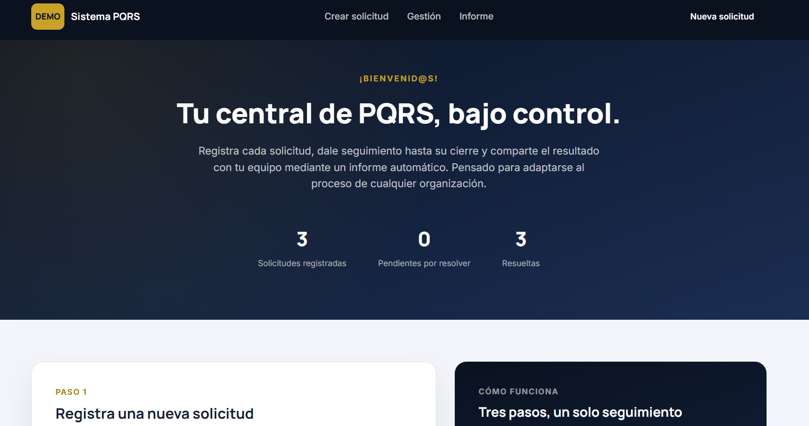
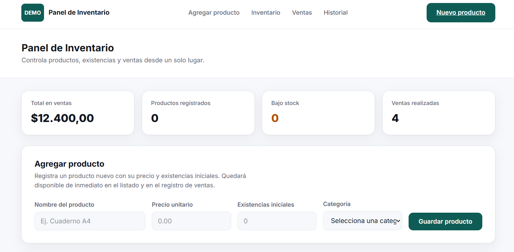

Buenas prácticas en desarrollo de software
Principios y recomendaciones para escribir código más limpio, mantenible y fácil de escalar en proyectos reales.
Explorar recursoAyudo a transformar ideas y procesos en productos digitales confiables mediante arquitecturas backend sólidas, automatización inteligente e integración de tecnologías modernas.
 STATUS: ONLINE
STATUS: ONLINE
Programa intensivo de formación tecnológica enfocado en desarrollo backend, bases de datos, arquitectura de software, metodologías ágiles y construcción de soluciones para entornos empresariales.
Software DeveloperBootcamp Full Stack Java enfocado en desarrollo de aplicaciones web, APIs REST, Spring Boot, bases de datos relacionales, frontend moderno y buenas prácticas de ingeniería de software.
Full Stack Java DeveloperLas decisiones técnicas correctas desde el inicio facilitan el crecimiento y mantenimiento del sistema.
Busco reducir tareas manuales mediante procesos automatizados que aporten consistencia y ahorro de tiempo.
La inteligencia artificial debe aportar valor tangible, optimizando procesos y mejorando la toma de decisiones.
Arquitectura de servicios limpia, mantenible y pensada para escalar sin reescribirse.
APIs REST documentadas, seguras y consistentes, listas para integrarse con cualquier cliente.
Modelos y flujos de NLP aplicados a procesos reales: clasificación, análisis y respuesta automática.
Despliegue y contenedores con Docker, pensados para entornos reproducibles y portables.
Cuando el proyecto lo exige, conecto ese backend con una interfaz igual de sólida.
Bases de datos y consultas optimizadas para crecer sin perder rendimiento.
Explora contenido técnico, conceptos fundamentales y recursos que han influido en mi crecimiento como desarrollador. Una colección de temas útiles sobre arquitectura, calidad de código y desarrollo de software moderno.
Principios y recomendaciones para escribir código más limpio, mantenible y fácil de escalar en proyectos reales.
Explorar recursoConceptos esenciales para estructurar sistemas robustos, separar responsabilidades y facilitar el mantenimiento.
Explorar recursoRecursos para profundizar en Java, Spring Boot, APIs REST y herramientas utilizadas en el desarrollo backend.
Explorar recurso

Estoy construyendo y desplegando nuevos proyectos, de prácticas dirigidas a productos completos. Mientras se suman a esta sección, puedes seguir el progreso, los prototipos y el código en curso directamente en mi GitHub.
El único lugar del sitio donde el orden importa: cada proyecto pasa por estas seis etapas, en este orden.
Cuéntame el problema que quieres resolver. Yo me encargo de la arquitectura, la automatización y todo lo que hay detrás.
Escríbeme →